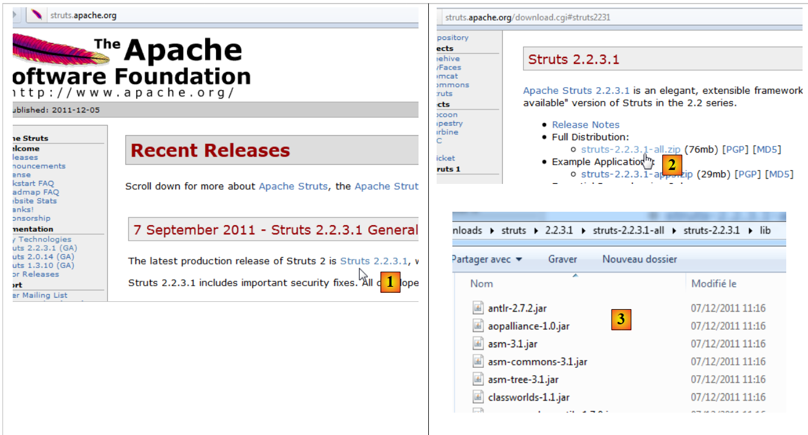

1. مقدمة
ملف PDF الخاص بالوثيقة متاح |هنا|.
تتوفر أمثلة من الوثيقة |هنا|.
نهدف هنا إلى تقديم المفاهيم الأساسية لـ Struts 2 باستخدام أمثلة. Struts 2 هو إطار عمل ويب يوفر:
- عددًا من المكتبات في شكل ملفات JAR
- إطار عمل للتطوير: يؤثر Struts 2 على كيفية تطوير تطبيقات الويب.
المتطلبات الأساسية لفهم الأمثلة هي كما يلي:
- معرفة أساسية بلغة Java
- معرفة أساسية بتطوير الويب، ولا سيما HTML.
يمكن العثور على جميع الموارد اللازمة لتلبية هذه المتطلبات الأساسية على الموقع الإلكتروني [http://developpez.com]. وقد قمت بكتابة بعضها، ويمكن العثور عليها على الموقع الإلكتروني [https://stahe.github.io].
الأمثلة الواردة في هذا المستند متاحة على الرابط [http://tahe.developpez.com/java/struts2].
لمعرفة المزيد عن Struts 2، يمكنك استخدام المراجع التالية:
- [ref1]: وثائق Struts 2، المتوفرة على موقع Struts
- [ref2]: كتاب "Struts 2 in Action" للكتاب دونالد براون وتشاد مايكل ديفيس وسكوت ستانليك، الصادر عن دار مانينغ. هذا الكتاب مفيد للغاية.
سنشير من حين لآخر إلى [ref2] لإعلام القارئ بأنه يمكنه استكشاف موضوع ما بعمق أكبر باستخدام هذا الكتاب.
تمت كتابة هذا المستند بحيث يمكن قراءته دون الحاجة إلى جهاز كمبيوتر. لذلك، قمنا بتضمين العديد من لقطات الشاشة.
1.1. دور Struts 2 في تطبيق الويب
أولاً، دعونا نضع Struts 2 في سياق تطوير تطبيق الويب. غالبًا ما يتم بناؤه على بنية متعددة المستويات مثل ما يلي:
 |
- طبقة [الويب] هي الطبقة التي تتعامل مع مستخدم تطبيق الويب. يتفاعل المستخدم مع تطبيق الويب من خلال صفحات الويب التي يعرضها المتصفح. ويقع Struts 2 في هذه الطبقة، وفيها فقط.
- تقوم طبقة [الأعمال] بتنفيذ منطق الأعمال الخاص بالتطبيق، مثل حساب الراتب أو الفاتورة. تستخدم هذه الطبقة البيانات الواردة من المستخدم عبر طبقة [الويب] ومن نظام إدارة قواعد البيانات (DBMS) عبر طبقة [DAO].
- تدير طبقة [DAO] (كائنات الوصول إلى البيانات) وطبقة [JPA] (واجهة برمجة تطبيقات الاستمرارية في Java) ومحرك JDBC الوصول إلى بيانات نظام إدارة قواعد البيانات. تعمل طبقة [JPA] كأداة ORM (أداة التعيين العلائقي للكائنات). وهي تعمل كجسر بين الكائنات التي تتعامل معها طبقة [DAO] والصفوف والأعمدة من البيانات في قاعدة البيانات العلائقية.
- يمكن تحقيق تكامل الطبقات باستخدام حاوية Spring أو EJB3 (Enterprise JavaBeans).
ستستخدم معظم الأمثلة الواردة أدناه طبقة واحدة فقط، وهي طبقة [web]:
 |
ومع ذلك، ستختتم هذه الوثيقة بإنشاء تطبيق ويب متعدد الطبقات:
 |
سيتم توفير طبقات [الأعمال] و[DAO] و[JPA/Hibernate] لنا كأرشيف JAR، بحيث لا يتعين علينا، مرة أخرى، سوى بناء طبقة [الويب].
1.2. نموذج تطوير Struts 2 MVC
يُنفذ Struts 2 نمط الهندسة المعمارية MVC (النموذج – العرض – وحدة التحكم) على النحو التالي:
 |
تتم معالجة طلب العميل على النحو التالي:
تكون عناوين URL المطلوبة على الشكل http://machine:port/contexte/rep1/rep2/.../Action. يجب أن يتطابق المسار [/rep1/rep2/.../Action] مع إجراء محدد في ملف تكوين Struts 2؛ وإلا، يتم رفضه. يتم تعريف الإجراء في ملف XML بالصيغة التالية:
في المثال السابق، لنفترض أن عنوان URL [http://machine:port/contexte/actions/Action1] قد تم طلبه. عندئذ يتم تنفيذ الخطوات التالية:
- الطلب - يقوم عميل المتصفح بإرسال طلب إلى وحدة التحكم [FilterDispatcher]. تتولى وحدة التحكم معالجة جميع طلبات العملاء. وهي نقطة الدخول إلى التطبيق. وهي تمثل الحرف C في نموذج MVC.
- المعالجة
- تراجع وحدة التحكم C ملف التكوين الخاص بها وتكتشف وجود الإجراء actions/Action1. يحدد مساحة الاسم (السطر 1) المقترنة باسم الإجراء (سمة name في السطر 2) الإجراء actions/Action1.
- يقوم وحدة التحكم C بإنشاء مثيل [2a] لفئة من النوع [actions.Action1] (سمة class في السطر 2). يمكن أن يكون اسم وحزمة هذه الفئة أي شيء.
- إذا كان عنوان URL المطلوب يتضمن معلمات بالشكل [param1=val1¶m2=val2&...], فإن وحدة التحكم C تعين هذه المعلمات لفئة [actions.Action1] على النحو التالي:
لذلك، يجب أن تحتوي فئة [actions.Action1] على طرق setParami لكل معلمة من المعلمات parami المتوقعة.
- تستدعي وحدة التحكم C الطريقة ذات التوقيع [String execute()] لفئة [actions.Action1] للتنفيذ. يمكن لهذه الطريقة بعد ذلك استخدام المعلمات parami التي استردتها الفئة. عند معالجة طلب المستخدم، قد تحتاج إلى طبقة [business] [2b]. بمجرد معالجة طلب العميل، يمكنها إنشاء استجابات متنوعة. ومن الأمثلة الكلاسيكية على ذلك:
- صفحة خطأ إذا تعذر معالجة الطلب بشكل صحيح
- صفحة تأكيد في الحالات الأخرى
تُرجع طريقة execute نتيجة من نوع سلسلة نصية إلى وحدة التحكم C، تُعرف باسم مفتاح التنقل. في المثال أعلاه، يمكن أن تُنتج [*actions.Action1*].*execute مفتاحي تنقل: "page1" (السطر 3) و"page2" (السطر 4). ستقوم طريقة [actions.Action1].execute أيضًا بتحديث نموذج M* [2c] الذي ستستخدمه صفحة JSP المرسلة استجابةً للمستخدم. قد يحتوي هذا النموذج على عناصر من:
- فئة [actions.Action1] التي تم إنشاء مثيل لها
- جلسة عمل المستخدم
- بيانات نطاق التطبيق
- ...
- الاستجابة - يوجه وحدة التحكم C صفحة JSP المطابقة لمفتاح التنقل لعرض [3]. هذا هو العرض، وهو V في MVC. تستخدم صفحة JSP نموذج M لتهيئة الأجزاء الديناميكية من الاستجابة التي يجب إرسالها إلى العميل.
الآن، دعونا نوضح العلاقة بين بنية الويب MVC والبنية الطبقية. في الواقع، هذان مفهومان مختلفان يتم الخلط بينهما أحيانًا. لنأخذ تطبيق ويب Struts 2 أحادي الطبقة:
 |
إذا قمنا بتنفيذ الطبقة [الويب] باستخدام Struts 2، فسنحصل بالفعل على بنية ويب MVC ولكن ليس بنية متعددة الطبقات. هنا، ستتولى الطبقة [الويب] كل شيء: العرض، ومنطق الأعمال، والوصول إلى البيانات. مع Struts 2، فإن فئات [Action] هي التي ستؤدي هذا العمل.
الآن، دعونا نفكر في بنية ويب متعددة الطبقات:
 |
يمكن تنفيذ طبقة [الويب] بدون إطار عمل وبدون اتباع نموذج MVC. وبذلك نحصل على بنية متعددة الطبقات، لكن طبقة الويب لا تنفذ نموذج MVC.
في MVC، قلنا إن نموذج M هو نموذج عرض V، أي مجموعة البيانات التي يعرضها عرض V. أحيانًا (في كثير من الأحيان)، يُعطى تعريف آخر لنموذج M في MVC:
 |
يعتبر العديد من المؤلفين أن ما يقع على يمين طبقة [الويب] يشكل نموذج M في MVC. لتجنب الغموض، يمكننا الإشارة إلى:
- نموذج المجال عند الإشارة إلى كل ما يقع على يمين طبقة [العرض]
- نموذج العرض عند الإشارة إلى البيانات التي تعرضها طريقة العرض V
فيما يلي، سيشير مصطلح "نموذج M" حصريًا إلى نموذج العرض V.
1.3. الأدوات المستخدمة
من الآن فصاعدًا، نستخدم (ديسمبر 2011)
- بيئة تطوير NetBeans 7.01 المتوفرة على [http://www.netbeans.org]
- المكوّن الإضافي Struts 2 لـ NetBeans 7.01، المتوفر على [http://plugins.netbeans.org/plugin/39218]
- Struts 2 الإصدار 2.2.3، المتوفر على [http://struts.apache.org/]
لاحظ أن مكتبات Struts 2 المتوفرة على [http://struts.apache.org/] هي المطلوبة فقط لتطوير الأمثلة التالية. يمكن استبدال NetBeans ببيئة تطوير متكاملة أخرى (Eclipse، JDeveloper، IntelliJ، إلخ)، والمكوّن الإضافي Struts 2 موجود فقط لتسهيل عمل المطور. وهو ليس ضروريًا أيضًا.
1.3.1. بيئة تطوير NetBeans
في موقع تنزيل NetBeans، نختار إصدار Java EE:

1.3.2. مكون Struts 2 الإضافي
اعتمادًا على إصدار NetBeans، لم يكن هذا المكون الإضافي متاحًا دائمًا. اعتبارًا من ديسمبر 2011، يمكن العثور عليه على الرابط [http://plugins.netbeans.org]. يسرد هذا الرابط المكونات الإضافية المختلفة المتاحة لـ NetBeans. يمكنك تصفية البحث. في [1]، نبحث عن المكونات الإضافية التي تحتوي على كلمة "struts" في اسمها.
 |
- اتبع الرابط [2]
 |
قم بتنزيل المكون الإضافي وفك ضغطه [2]. لدمجه في NetBeans، اتبع الخطوات التالية:
- قم بتشغيل NetBeans
 |
- في [1]، حدد قائمة "أدوات/المكونات الإضافية"
- في علامة التبويب [2]، انقر فوق الزر [3]
- في [4]، حدد ملفات .nbm للمكونات الإضافية التي تم تنزيلها. هنا، نختار مكتبات Struts 2.2.3 بدلاً من تلك الخاصة بـ Struts 2.0.14
- عد إلى علامة التبويب [2]، ثم قم بتثبيت المكونات الإضافية المحددة باستخدام الزر [5].
غالبًا ما يتطلب تثبيت المكونات الإضافية إعادة تشغيل NetBeans.
1.3.3. مكتبات Struts 2
إذا قمت بتنزيل المكون الإضافي Struts 2 لـ NetBeans، فستكون لديك مكتبات Struts الرئيسية ولكن ليس كلها. لاحقًا، سنحتاج إلى مكتبات معينة متوفرة على موقع Struts 2 [http://struts.apache.org/].
 |
اتبع الرابط [1] ثم الرابط [2] لتنزيل ملف zip الخاص بالإصدار 2.2.3.1. بمجرد فك ضغط التوزيع، يمكن العثور على المكتبات المطلوبة من قبل Struts في مجلد [lib] [3] الخاص بالتوزيع. هناك العشرات منها، لذا يطرح السؤال حول أي منها ضروري. وهنا سيساعدنا المكون الإضافي Struts.